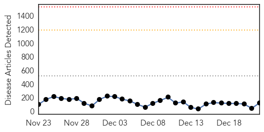
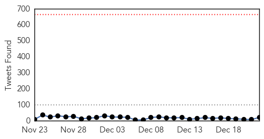
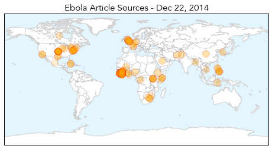
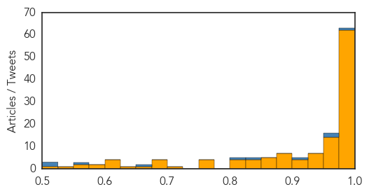

Unknown
30-Day Web Trend
0 alerts, 0 warnings

30-Day Twitter Trend
0 alerts, 0 warnings

Article Locations

Article Confidences

Top Articles:
- 0.992
- Enterovirus D-68 infection confirmed in L.A. County
- 0.992
- KDHE and CDC Investigate New Virus
- 0.990
- Take the flu seriously, get vaccinated
- 0.989
- State says new virus found after resident's death
- 0.988
- Officials: Reduce risk of flu this season - DailyPress.net
- 0.984
- Some hospitals limit visits as flu spreads
- 0.980
- Flu increasing; hospital visitation policy tightened
- 0.979
- Tick-borne virus discovered after death of Kansas man
- 0.955
- Flu season picking up steam just before the holidays
- 0.949
- Two pediatric flu deaths reported in Eastern Virginia
- 0.940
- Cedar Rapids, Iowa News, Sports, and Weather
- 0.920
- Flu kills two Virginia children; doctors offer advice on how to stay healthy
- 0.917
- Chicago Tribune
- 0.917
- Chicago Tribune
- 0.917
- Chicago Tribune
- 0.917
- Chicago Tribune
- 0.917
- Chicago Tribune
- 0.917
- Chicago Tribune
- 0.917
- Chicago Tribune
- 0.917
- Chicago Tribune
- 0.917
- Chicago Tribune
- 0.917
- Chicago Tribune
- 0.917
- Chicago Tribune
- 0.917
- Chicago Tribune
- 0.917
- Chicago Tribune
- 0.917
- Chicago Tribune
- 0.910
- The world windows to Thailand
- 0.899
- Caramel Apple Listeria Hits Missouri's East and NE
- 0.894
- Briefs: Chanute Historical Society invites more members
- 0.891
- Statement by Shri Jagat Prakash Nadda Minister of Health Family Welfare
- 0.872
- Leapin’ Lizards! Salmonella from Pet Reptiles Climbs
- 0.844
- Third person dies in Edinburgh Royal Infirmary C diff outbreak
- 0.843
- Dozens of People Reportedly Infected; Caramel Apples Linked?
- 0.834
- Cambodia Charges Unlicensed Health Worker Over Mass HIV Infection
- 0.827
- Cambodia Charges Unlicensed Health Worker Over Mass HIV Infection
- 0.813
- Mississippi teacher with flu dies
- 0.796
- Further FMD cases in South Korea
- 0.784
- Testing of H5N1 samples to be done at PGI soon
- 0.783
- Mass HIV infection fears in Cambodia
- 0.765
- Mind Your Mouth: How Oral Health Affects Overall Health
- 0.764
- Vaccine Progress For Chronic Wasting DiseaseMedicalResearch.com
- 0.729
- Germany to step up bird flu testing after new cases discovered
- 0.729
- Germany to step up bird flu testing after new cases discovered
- 0.708
- Advice to Consumers About Caramel Apple Listeria Outbreak
- 0.704
- Germany to step up bird flu testing after new cases discovered
- 0.693
- Unlicensed Cambodian doctor charged over mass HIV infection
- 0.655
- Doctor murder rap: 106 patients get HIV, man charged with murder for syringe use
- 0.644
- Virus, pests blamed for Kan. death
- 0.633
- Flu Forces School District to Close Early for Christmas
- 0.630
- Yem Chrin Faces Charges For Allegedly Spreading HIV To More Than 100 Villagers
Showing top 50 articles...
Top Tweets:
-
No tweets found for Dec 22, 2014
Ebola
30-Day Web Trend
0 alerts, 0 warnings

30-Day Twitter Trend
0 alerts, 0 warnings

Article Locations
Article Confidences
Top Articles:
- 1.000
- Fighting Ebola on All Fronts by Christian Bréchot
- 1.000
- Experts: It was a busy, black-eye year for disease control
- 1.000
- More than 7500 dead from Ebola
- 1.000
- Ebola Epidemic Continues in Africa, Despite Progress in Some Places
- 1.000
- Ebola outbreak reaches Senegal, riots break out in Guinea
- 1.000
- Fighting Ebola on all fronts
- 1.000
- Ebola death toll passes 7,500
- 1.000
- Ebola Epidemic Continues in Africa, Despite Progress in Some Places
- 1.000
- PIH working to eradicate Ebola in Salone « Awoko Newspaper
- 1.000
- Climate change to Ebola: what happened next? – podcast
- 0.999
- Dlamini-Zuma: Ebola Crisis Galvanizing African Nations
- 0.999
- Ebola Claims 7,000 Lives, Hits Sierra Leone Hardest
- 0.999
- Is PH ready to handle Ebola?
- 0.999
- Ebola outbreak 'far from over'
- 0.999
- Ebola vaccine is safe for human use, say scientists
- 0.999
- CDC chief sees promising signs, long road ahead for Ebola-hit countries
- 0.999
- Mali ends last quarantines, could be Ebola-free next month
- 0.999
- Experimental Ebola vaccine shows promise, experts say
- 0.998
- CDC director Frieden cites progress, challenges in Ebola fight after W. Africa trip
- 0.998
- CDC chief: 'World of difference' in Ebola fight, but complacency a risk
- 0.998
- Lessons to learn from Ebola outbreak
- 0.998
- CDC director warns against Ebola complacency
- 0.998
- Courage of Ebola health workers should inspire greater efforts by all, says Ban
- 0.998
- Courage of Ebola health workers should inspire greater efforts by all, says Ban - Sierra Leone
- 0.997
- CDC director cites progress, challenges in Ebola fight
- 0.997
- New church plan on Ebola: pastoral care as well as health, education. Published 12
- 0.997
- Novel Biostatic Antimicrobial Technology From Clearstream-mPact Technology Partnership (CmTP) Offers Effective Protection Against Transmission of Ebola Virus
- 0.997
- BiztechAfrica Mobile,Technology & IT News Africa
- 0.996
- Sierra Leone Urges Safe Burials
- 0.996
- New hope as DNA vaccines to fight Ebola proved safe
- 0.996
- Taming Sierra Leone’s Ebola spread
- 0.996
- RPT-Ebola response in rural Sierra Leone not yet rapid enough
- 0.995
- CDC chief: West Africans say, thank you for helping us protect ourselves
- 0.993
- NH doctor returns home after helping workers battle Ebola
- 0.993
- Where have all ebola fearmongers gone?
- 0.993
- Sioux Falls doctor experiences Ebola fight firsthand
- 0.992
- Burial practices fuel spread of Ebola in Sierra Leone
- 0.992
- Sierra Leone Bans Christmas As Ebola Death Toll Surpasses 7,500
- 0.992
- UN Secretary General Visits Ebola Victims
- 0.992
- Target: Ebola
- 0.991
- Over 70 NHS heroes fighting Ebola this Christmas
- 0.991
- Cebu News, The Freeman Sections, The Freeman
- 0.991
- Unsafe burials fuelling most of Sierra Leone's Ebola outbreak
- 0.991
- Sierra Leone launches safety in burial Ebola campaign
- 0.991
- Burials fuel Ebola outbreak
- 0.991
- Campaign against spread of Ebola in Guinean border region (United Nations Capital Development Fund)
- 0.990
- Sierra Leone urges safe burials to stem Ebola
- 0.989
- Chief of Staff urges religious leaders to support Ebola fight
- 0.988
- UN Chief Commits to Help End Ebola in Sierra Leone
- 0.988
- To fight Ebola, create a Health Workforce Reserve force
Showing top 50 articles...
Top Tweets:
- 0.978
- RITE Strategy in Liberia: Rapid Isolation and Treatment of Ebola – helping to stem Ebola outbreak there.
- 0.968
- RT: Ebola OMS: 19031 cas 7373 décès 17dec Sierra Leone : 8759 2477 morts 14dec Liberia : 7819 3346 morts 16dec Guinée : 245…
- 0.967
- RT: Ebola outbreak in West Africa is far from over. Death toll is more than 7300 people. Situation in Sierra Leone is especi…
- 0.905
- Sierra Leone has largest number of Ebola cases right now; if scale-up of response continues we can see case numbers drop
- 0.846
- Spent several days in W Africa; spoke with Ebola patients & response staff; met w. many of CDC’s 170 staff working in affected countries
- 0.804
- Ebola continues to spread in Sierra Leone and in Guinea’s capitol city. No time to relax our grip on the response.
- 0.674
- RT: Ebola Lockdown Ebola awareness poster art in progress http://t.c…
- 0.561
- Ebola Deeply's Khadi on how diverse women's groups in Sierra Leone are coming together to tackle Ebola http://t.co/ra0k1raN3Y
- 0.506
- Untested Ebola drug given to patients in Sierra Leone causes UK walkout http://t.co/HDt7QPBR7W
- 0.506
- RT: From the port of LasPalmas to Ebola-affected countries & @WFP ship food to where it's needed most http://t…